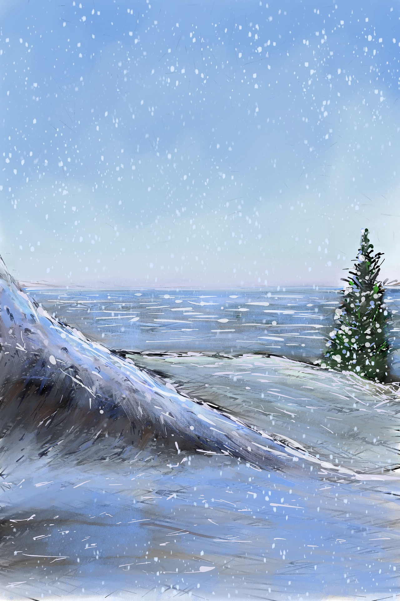

FICHA: 2558346
El Artico ha perdido el 14% de su hielo marino perenne en un solo año
WASHINGTON, El hielo perenne del Artico se redujo en un 14% durante el ultimo año, al perder 720.000 kilometros cuadrados, una superficie superior a la Peninsula iberica, segun datos de la NASA .
Segun el JPL, la perdida del hielo perenne, que deberia matenerse durante todo el verano, fue todavia mayor y se acerco a un 50% en el momento en que ese hielo se desplazaba desde el Artico orientak hacia el oeste.
Son Nghiem, investigador del JPL ha declarado que:
"Los cambios registrados en esos años en el hielo artico son rapidos y espectaculares, De mantenerse la situacion, esta tendra un impacto profundo en el ambiente, asi como en el transporte marino y el comercio."

Sebastian Tovar - Correo:copyright@gmail.com